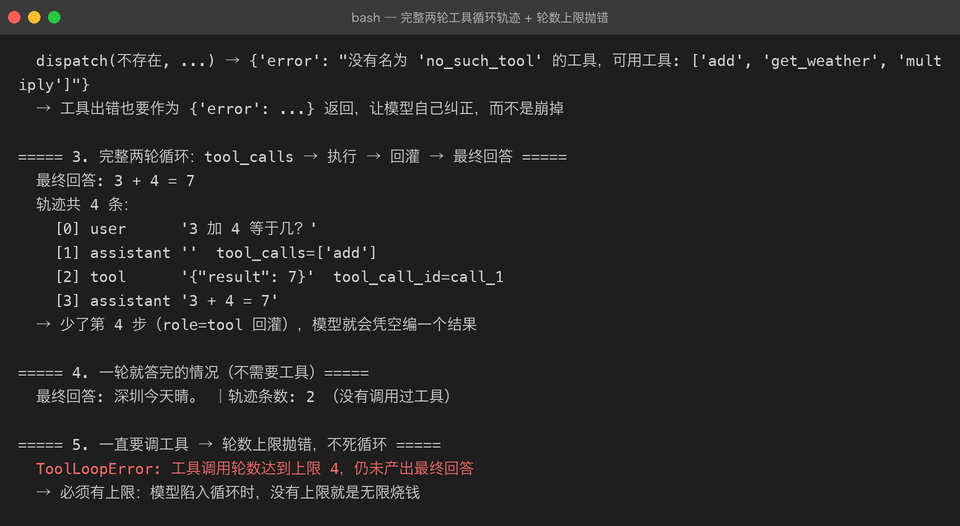

Project 03 — Chapter 08：Function Calling【函数调用】
状态：✅ 已校对 对应代码：
src/assistant/tools.py、src/assistant/agent.py
1. 项目要增加什么能力
前面所有章节里，模型能做的只有一件事：说话。
reply = await client.chat(messages) # 永远返回一个字符串但真实应用需要模型「做事」：
查一下北京今天的天气 → 需要调天气 API
帮我算一下 128 * 37 → 需要真的算（模型算乘法经常错）
把这条记录插进数据库 → 需要执行写操作本章目标：
让模型能「请求调用」你的函数，你执行完把结果回灌给它，它再基于结果回答用户。
一句话说清边界：
模型不执行任何代码。 它只是输出「我想调用
get_weather，参数是city="北京"」——真正执行的是你的程序。
2. 为什么需要这个知识
Function Calling 是「聊天机器人」进化成「Agent」的关键一步，也是目前 AI 应用岗面试的高频考点。
它解决了模型的两个硬伤：
1. 知识截止 —— 模型不知道今天天气、不知道你数据库里的数据
2. 不擅精确计算 —— 大数乘法、日期推算，模型经常一本正经地算错同时它把「模型能做什么」变成了可控的：你能调用什么，模型就只能调用什么。这既是能力边界，也是安全边界。
3. 核心概念
3.1 工具的声明：JSON Schema
TOOLS = [{
"type": "function",
"function": {
"name": "get_weather",
"description": "查询指定城市今天的天气。用户问天气时调用。",
"parameters": {
"type": "object",
"properties": {
"city": {"type": "string", "description": "城市名，如「北京」"},
"unit": {"type": "string", "enum": ["celsius", "fahrenheit"]},
},
"required": ["city"],
},
},
}]description 不是装饰：模型靠它决定要不要调用、参数填什么。写得含糊，调用就会不稳定。
用 Python 函数自动生成 schema（省得手写两遍）：
import inspect
def tool(fn):
sig = inspect.signature(fn)
properties, required = {}, []
for name, p in sig.parameters.items():
properties[name] = {"type": "string", "description": f"{name} 参数"}
if p.default is inspect.Parameter.empty:
required.append(name)
fn._schema = {
"type": "function",
"function": {"name": fn.__name__, "description": (fn.__doc__ or "").strip(),
"parameters": {"type": "object", "properties": properties, "required": required}},
}
return fn3.2 完整工具循环（这是本章的核心图）
① 你发请求：messages + tools
↓
② 模型返回：不是 content，而是 tool_calls
↓
③ 你执行本地函数，拿到结果
↓
④ 你把结果作为 role="tool" 的消息追加（带 tool_call_id）
↓
⑤ 再次请求模型（带上工具结果）
↓
⑥ 模型基于真实结果生成最终回答最容易漏的是 ④ 和 ⑤：只执行不回灌，模型就会凭空编一个结果。
3.3 代码骨架
async def run_agent(client, user_text: str, max_iterations: int = 4) -> str:
messages = [
{"role": "system", "content": "你可以调用工具来获取真实信息。"},
{"role": "user", "content": user_text},
]
for _ in range(max_iterations):
msg = await client.chat(messages, tools=TOOLS) # 返回完整 assistant 消息
messages.append(msg)
calls = msg.get("tool_calls") or []
if not calls:
return msg.get("content") or "" # 没有工具调用 → 结束
for call in calls:
result = dispatch(call["function"]["name"], call["function"]["arguments"])
messages.append({
"role": "tool",
"tool_call_id": call["id"], # ← 必须原样带回
"content": json.dumps(result, ensure_ascii=False),
})
raise ToolLoopError("工具调用轮数超过上限")3.4 max_iterations 是必须的
没有上限的工具循环可能：
模型调工具 → 结果不满意 → 再调 → 再不满意 → …… → 你的账单建议上限 3~5 轮，超了就明确报错或让用户确认。
3.5 安全边界：什么不该暴露给模型
✅ 只读查询：天气、搜索、数据库 SELECT、计算
⚠️ 需确认：下单、发邮件、转账
❌ 绝不给：执行任意 shell 命令、删除数据、读写任意文件模型会被 Prompt 注入诱导（Chapter 01）。权限校验必须在你的代码里做，不能指望模型「判断该不该做」。
3.6 参数必须校验
模型给的参数是它可能"幻觉"出来的：
def dispatch(name: str, raw_args: str):
args = json.loads(raw_args) # 可能不是合法 JSON
fn = REGISTRY.get(name) # 可能是模型编造的函数名
if fn is None:
return {"error": f"没有这个工具: {name}"} # ← 回灌错误而不是崩
return fn(**args)「工具不存在」也要作为结果回灌——模型看到错误信息通常会自我纠正。
4. 项目代码
src/assistant/
├── tools.py # @tool 装饰器 / REGISTRY / dispatch() / 内置工具
├── agent.py # run_agent()：工具循环 + max_iterations
├── errors.py # ToolLoopError / ToolNotFoundError
└── api.py # POST /chat/agent —— 走工具循环的接口内置工具（用于演示，不联网也能跑）：
@tool
def add(a: float, b: float) -> float:
"""计算两个数的和。"""
return a + b
@tool
def get_weather(city: str) -> dict:
"""查询城市天气（演示用：返回固定数据）。"""
return {"city": city, "temp": 26, "desc": "晴"}5. Java ↔ Python 对比
| Java | Python | 说明 |
|---|---|---|
| 接口 + 实现类 | 函数 + @tool | 契约与实现 |
反射 Method.invoke() | REGISTRY[name](**args) | 动态派发 |
Spring HandlerMapping | dispatch(name, args) | URL → Handler ≈ 工具名 → 函数 |
@RequestMapping 元数据 | inspect.signature() | 从代码提取元信息 |
| Swagger / OpenAPI | JSON Schema | 同一套 schema 给人和模型看 |
| RPC（Dubbo/gRPC） | Function Calling | 都是「描述 + 调用 + 拿结果」 |
@Valid 参数校验 | Pydantic / 手写校验 | 服务端的参数校验永远不能省 |
权限注解 @PreAuthorize | 工具白名单 | 安全边界要在服务端 |
最贴切的类比：
Function Calling ≈ 让模型当 RPC 调用方。 你提供一份接口文档（JSON Schema），模型决定调哪个接口、传什么参数，但执行权和权限都在你手里。
6. 常见坑
坑 1：执行完不回灌结果
result = dispatch(...) # 执行了
# 忘了 append role="tool" 的消息
return result # ❌ 直接把 JSON 丢给用户后果：模型从没看到结果，用户看到一坨 JSON。正确做法是回灌后再请求一次模型。
坑 2：tool_call_id 不匹配
坑 3：没有轮数上限
见 3.4。加 max_iterations。
坑 4：不校验参数就直接用
city = args["city"] # ❌ KeyError；或者 city="火星"模型会幻觉参数。要么用 Pydantic 校验，要么在工具内部做防御式检查，把错误作为返回值回灌。
坑 5：把危险操作暴露给模型
@tool
def run_shell(cmd: str): ... # ❌❌❌ 等于把服务器交给模型坑 6：description 写得太随意
❌ "获取信息"
✅ "查询指定城市今天的天气（温度与天气状况）。用户询问天气时调用。"description 是模型唯一的决策依据，值得认真写。
坑 7：并行 tool_calls 只处理了第一个
模型可能一次返回多个 tool_calls。要全部执行、全部回灌，且顺序与 id 保持一致。
7. 实战挑战
挑战 1：实现 @tool 装饰器与 dispatch()，并让「工具不存在」也能作为错误结果回灌。
挑战 2：实现 run_agent()，跑通「问北京天气 → 调工具 → 回灌 → 自然语言回答」完整两轮。
挑战 3（进阶）：实现并行工具调用——一次返回多个 tool_calls 时全部执行，并用 asyncio.gather 并发。
8. 主动回忆
- 模型会执行函数吗？真正执行的是谁？
- 工具循环的六个步骤是什么？最容易漏哪一步？
- 为什么必须设
max_iterations？ - 工具参数为什么必须校验？模型可能给出什么样的错误参数？
tool_call_id的作用是什么？- 哪些操作绝不应该暴露给模型？为什么？
description为什么重要？
9. 本节完成标准
- [ ]
tools.py有@tool装饰器 +REGISTRY+dispatch() - [ ]
agent.py的工具循环有轮数上限，且超过时明确报错 - [ ] 工具结果一定回灌为
role="tool"消息，tool_call_id正确对应 - [ ] 未知工具名 / 非法参数会作为错误结果回灌，而不是崩溃
- [ ] 真实跑通过一次完整的「提问 → 调工具 → 回答」
- [ ] 没有暴露任何危险工具（shell / 删除 / 任意文件读写）
上一章：07-token-context-window.md 下一章：09-application-architecture.md —— 把九章组装成一个应用。
真实运行
工具调用路径（ai-app "..." --agent）：模型先返回 tool_calls，程序执行本地函数后把结果回灌，模型再生成最终回答：

